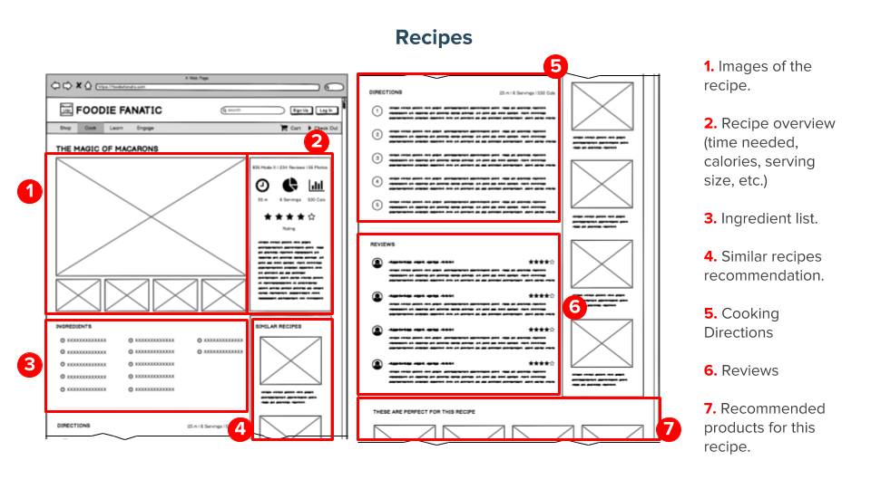
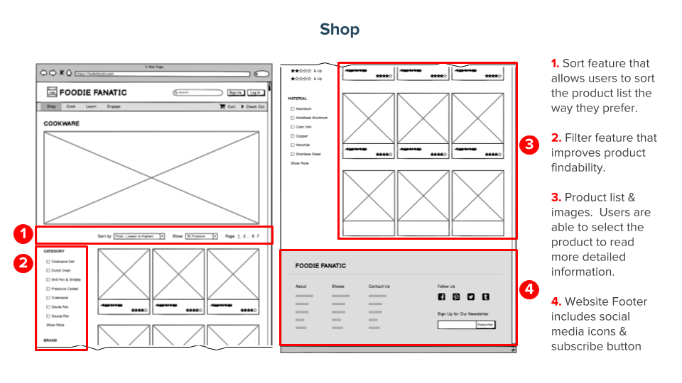

Overview
Foodie Fanatic is a new specialty cooking and baking store selling a wide range of food and cooking related products both online and at its physical stores across the nation. The company aims to provide more than just products to its customers, engaging and supporting customers by offering various cooking classes, instructional videos and articles, store demonstrations, and other social events. By conducting user research, Foodie Fanatic learned that its current design does not meet user needs and therefore decided to put out a Request for Proposal for an agency to provide new designs and content structure. Our goal of the project is to come up with an information architecture proposal for the Foodie Fanatic site, so that users are easily able to browse, search, and locate the content they want and better interact with the site in an intuitive way.
The Challenge
With great content comes a great responsibility to effectively share it with customers. While Foodie Fanatic possesses the former, its current information architecture strategy overwhelms users. In particular, Foodie Fanatic needs to address the following issues:
- Navigation: users experience difficulty navigating and accessing information which leads to attrition.
- Content: Foodie Fanatic offers rich content; however, it is not well structured and connected to other relevant content, making it difficult for users to find what might be relevant to their needs and interests.
- Engagement: users desire immersive experiences; however, they don’t always know when events are taking place so they miss out on opportunities to interact and engage with the company and other users.
The Plan
We created new designs and content structure to help Foodie Fanatic address the issues, improve user experience with the site, and drive purchases, engagement, and loyalty with the company.
We first identified user needs and constructed information personas based on the needs to guide decisions about designing the interaction space. By conducting card sorting sessions (a method that asks participants to organize topics into categories to help design and evaluate the information architecture of a site), we built a new site map to improve navigation through Foodie Fanatic site. Then, we created wireframes that depict the new page layout and better arrangement of the website’s content. We also specifically designed a wireframe for event page and wireframes for mobile app in order to create immersive experiences for users. Moreover, we built a taxonomy to show the hierarchy of the information and content and tags to improve search so that users can easily find the content that is important to them.
Personas
We established four information personas that conclude major types of users visiting the Foodie Fanatic site. The personas include information such as user’s biography, top information needs, strategy to address needs, foodie metrics, income level, and etc.
Site Map
Site Map shows the connections between web pages and website content, providing an overview of the website’s structure and the main navigation. Based on the user needs, we re-organized the websites into four major sections – shop, cook, learn, and engage – and used verbs to emphasize the call to action. In the shop section, users are able to find a wide range of food and cooking related products that Foodie Fanatic sells. For example, when users want to browse cookware sets, they can 1) click on “shop” on homepage, 2) select “cookware” from the dropdown menu, 3) browse all the categories under cookware and try to find “cookware sets” category, 4) select “cookware sets” which leads the users to the cookware sets web page where they can see a list of different cookware sets products. The cook section contains different kinds of recipes. For users like our persona Brad who is interested in learning how to cook, they can browse the learn section to take online cooking classes, watch how-to videos, and read tips and tricks. The engage section includes information like events calendar and locations, community forum, and contest, creating opportunities for users to interact and engage with the company and other users.
Wireframes
 Taxonomy